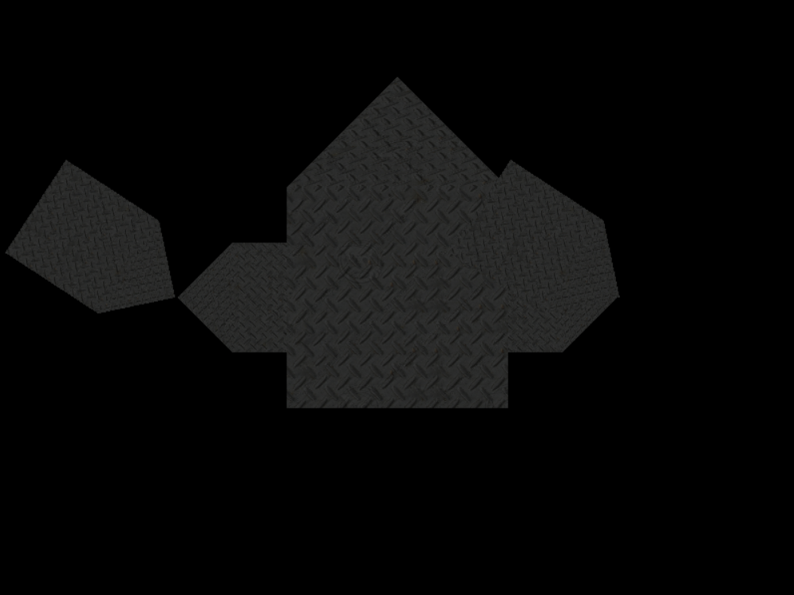

COMP 2501 - Winter 2014 Tutorial #7
Lighting
Description:
The purpose of this tutorial is to familiarize yourself with lighting in DirectX.
To get credit for the tutorial you must complete, or make significant progress, on the problems provided and demonstrate your results to the tutorial TA.
If you cannot complete the tutorial in the time allotted you may demonstrate the completed results to the TA during their office hours.
These tutorials are based on the Rastertek set of tutorials, with some information gathered from RBWhitaker.
Instructions:
Overview
Lighting plays a huge role in modern games and is one of the main factors in setting the mood and atmosphere.
In this tutorial we will be covering three types of lighting that you can use in your games. The types are as follows, in escalating order of complexity: ambient, diffuse and specular.
Before going any further, let's take a look at the code that's changed since last time.
Let's start with the HLSL light shader. You will notice that the light shader is just an updated version of the texture shader from the previous tutorial.
Examine model.vs. One major difference is the existence of constant buffer to hold camera information. In this shader we require the position of the camera to determine where this vertex is being viewed from for specular calculations. Another big difference is in our VertexInput and PixelInput types, which now contain a normal. The normal vector is used for calculating the amount of light by using the angle between the direction of the normal and the direction of the light. This normal vector is supplied in the robot.cpp class when we define our vertices. The PixelShader input also takes an additional ViewDirection property. This is calculated in the vertex shader and then sent into the pixel shader for specular lighting calculations.
Examine model.ps. We now have a lightBuffer that holds several different values. These two values will be set from values in the new LightClass object.
The ModelShaderClass is very similar to the TextureShaderClass from the previous tutorial with a couple of changes, which we will not go over here.
The LightClass object is new and is used to maintain the direction of our light, as well as its ambient, diffuse and specular properties.
In the GraphicsClass you will notice we configure our LightClass object like so:
// Initialize the light object.
m_Light->SetAmbientColor(0.15f, 0.15f, 0.15f, 1.0f);
m_Light->SetDiffuseColor(1.0f, 1.0f, 1.0f, 1.0f);
m_Light->SetDirection(0.0f, 0.0f, 1.0f);
m_Light->SetSpecularColor(1.0f, 0.0f, 1.0f, 1.0f);
m_Light->SetSpecularPower(42.0f);
You can try experimenting with these values later, but for now, leave them be.
Further down the GraphicsClass you'll notice that we now send a whole lot more information to the ModelShader at Render time:
result = m_ModelShader->Render(m_D3D->GetDeviceContext(), m_Model->GetIndexCount(), worldMatrices[i], viewMatrix, projectionMatrix,
m_Model->GetTexture(), m_Light->GetDirection(), m_Light->GetAmbientColor(), m_Light->GetDiffuseColor(),
m_Camera->GetPosition(), m_Light->GetSpecularColor(), m_Light->GetSpecularPower());
In the ModelShader class we include all of this extra lighting information in the constant buffer to be passed along to the shaders.
Those are the main differences to the code. If you run the program now you'll only see a black screen.
There is a model there, it's just not being lit. Let's fix that.
Problem 1)
Let's start with ambient lighting. Ambient lighting is a form of lighting that affects all objects in a scene equally. It is a constant value that is added to each pixel on an object to give it some light. The following is an example from Rastertek to help explain ambient lighting:
Imagine you are in a room and the only light source is sunlight which is coming in from a window. The sunlight doesn't directly point at all the surfaces in the room but everything in the room is illuminated to a certain extent due to bouncing light particles. This lighting effect on the surfaces that the sun isn't directly pointing at is called ambient lighting.
Probably the best way to understand ambient lighting is to implement it. It is very simple to do so. Since all we're going to be doing is changing the color of our pixels, we only need to work in the pixel shader for now.
You'll notice in the ModelPixelShader method there are a lot of comments floating around. It is under these comments that you should implement the various calculations they describe. The comment relevant to the problem of ambient lighting is here:
color = float4(0.0f, 0.0f, 0.0f, 0.0f);
// Set the default output color to the ambient light value for all pixels.
The color variable being set above the comment is a placeholder, you can remove it now. Instead, under the comment simply set the "color" variable to the ambient color being provided by the LightBuffer.
If you've done this properly you should now see this when running:

There is a uniform light being applied to every pixel in the shape. This is ambient lighting.
There is some new keyboard functionality in this project as well. Try pressing A or D on your keyboard. The robot will spin in place. Notice his lighting remains uniform regardless of the direction he is facing.
Problem 2)
The type of diffuse lighting we will be implementing is called directional lighting. Directional lighting is similar to how the Sun illuminates the Earth. It is a light source that is a great distance away and based on the direction it is sending light you can determine the amount of light on any object. However unlike ambient lighting it will not light up surfaces it does not directly touch.
The implementation of diffuse lighting in DirectX 11 is done with both vertex and pixel shaders. Diffuse lighting requires just the direction and a normal vector for any polygons that we want to light. The direction is a single vector that you define, and you can calculate the normal for any polygon by using the three vertices that compose the polygon. In this tutorial we will also implement the color of the diffuse light in the lighting equation.
Notice in the Vertex Shader:
// Calculate the normal vector against the world matrix only.
output.normal = mul(input.normal, (float3x3)worldMatrix);
// Normalize the normal vector.
output.normal = normalize(output.normal);
Here we take the normal supplied with the vertex, transform it into world coordinates and then normalize it. It will then be sent to the pixel shader.
The comments we are concerned with implementing for diffuse lighting are the following:
// Calculate the amount of light on this pixel.
A) ADD LINE OF CODE HERE
if(lightIntensity > 0.0f)
{
// Determine the final diffuse color based on the diffuse color and the amount of light intensity.
B) ADD LINE OF CODE HERE
// Saturate the ambient and diffuse color.
C) ADD LINE OF CODE HERE
Now, to explore the physics behind diffuse lighting, so that we can fill in these values.
A)
In the first comment we need to assign the variable "lightIntensity" a value. In diffuse lighting, the intensity of the light at any pixel is governed by the angle between the surface normal and the light direction. This diagram from here shows this relationship:
If the surface is exactly facing the light source, the light intensity value will be 1. If the surface is sideways, compared to the light, this value will be 0. If the surface is facing away from the light, it will be a negative value. We can use the dot() function determine this value. The dot product determines collinearity; effectively the closer the dot product to 1, the smaller the angle between the two vectors is. If you need a refresher on the dot product, you can look here. You will need to use the dot product of two vectors to assign a value to the light intensity for this first line of code. You will also need to wrap this dot product in a saturate() function. This function ensures that the value returned is between 0 and 1.
B)
The second line of code we need to add is much simpler. Right now we are storing the ambient light in a variable called "color". We need to first determine the final diffuse color. This is done by multiplying the diffuseColor provided via the Constant Buffer and the lightIntensity we determined the last step. Then we need to add this value to our ambient light (the color variable). This can be done in one, or multiple lines.
C)
The third step is simply to saturate() this new color value, similarly to how we saturated the lightIntensity value earlier. This is required because color values in DirectX RGB are between 0 and 1. That is, for instance, the color turqoise (RGB: 0, 255, 239) would be:
RGB/255: (0/255, 255/255, 239/255) = DirectX RGB(0, 1, 0.9372)
This is the kind of result saturation gives us.
Once you have added the three lines of code, try running the application.
Immediately you will notice the robot is brighter. This is simply because we have added some more lighting to the scene in the form of diffuse lighting. More importantly though, try spinning your robot using A and D.
The lighting diminishes the more you spin the robot. The lighting is set up so that it is pointing directly at the center of the scene. Given this information, and the calculations you performed before, can you explain this behaviour?
Problem 3)
Specular lighting is the use of bright spot highlights to give visual clues for light source locations. For example a red sphere with just ambient and diffuse lighting looks like the following:
And with white specular lighting:
Specular lighting is most commonly used to give light reflection off of metallic surfaces such as mirrors and highly polished/reflective metal surfaces. It is also used on other materials such as reflecting sunlight off of water. Used well it can add a degree of photo realism to most 3D scenes.
The calculations for specular lighting are relatively complex, and can be visualised from this diagram, taken from here:
There are five values that are important to specular lighting: the solid orange arrow (the direction of the light source), the dotted orange arrow (the reflection of the light source), the blue arrow (the surface normal), the green arrow (the viewing direction), the angle between the reflection vector and the viewing direction. Specular lighting is determined based on all five of these variables.
The comments that need to be implemented for specular lighting in the pixel shader are as follows:
// Calculate the reflection vector based on the light intensity, normal vector, and light direction.
A) ADD LINE OF CODE HERE
// Determine the amount of specular light based on the reflection vector, viewing direction, and specular power.
B) ADD LINE OF CODE HERE
A)
In this line of code, we need to assign a value to the "reflection" variable. The mathematical determination of this value is beyond the scope of this tutorial, and so it will just be given to you in pseudo-code so that you may translate it into HLSL. If you would like to know how the equation was produced, check here.
ReflectionVector = 2 * LightIntensity * VertexNormal - LightDirection
B)
Similarly to Problem 2A, the intensity of the specular light is determined by the dot product of the viewing direction vector and the reflection vector. The closer this value is to 1, the more intense the light is. We take this value, saturate it to ensure a value between 0 and 1, and then raise it to the "specular power" (this value is in our constant buffer). The 'specular power' is the shininess factor of a surface. Its job is to intensify and sharpen the edges in the area where the specular light is present. The lower the specular power, the greater the effects of the specular light.
We assign the value of all these calculations the "specular" variable.
Note: to raise a value to a power in HLSL we use the pow() function, for example:
pow(2, 3); // 2 cubed = 8
If your equation is written properly, you should get something like this when running the application:
You'll notice the light is brightest in the centre of the robot, where the viewing direction is pointed. Try rotating your robot with A and D, as before.
As you can see, his surface is now very reflective. This is specular lighting.
You can experiment with the lighting values assigned in graphicsclass.cpp and see how different values affect the lighting in your scene.